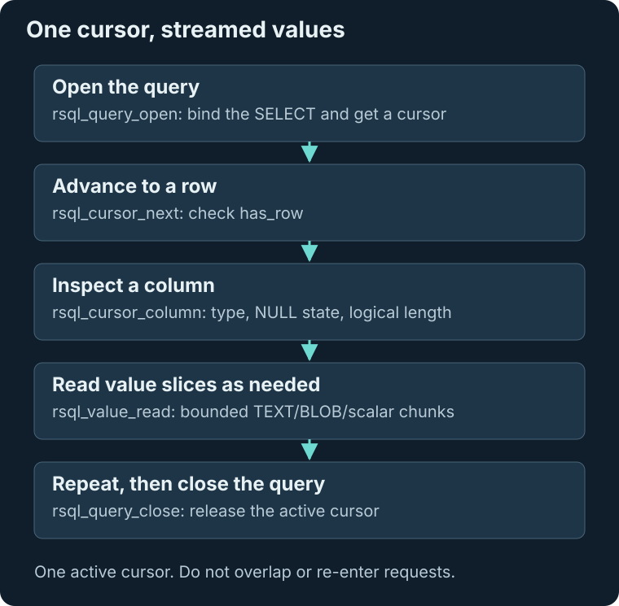

Public ABI
Applications use one stable interface whether a cursor scans one table, joins three sources or streams a long TEXT value. This page separates the calling convention, value lifecycle, producer-specific rules and persistence boundaries. The engine is single-cursor and non-reentrant: do not overlap requests.

Calling convention and compatibility
The fixed jump table begins at $C000. Every entry is a three-byte JMP and the table is
append-only within an ABI major version.
Calls use cc65 __fastcall__ and receive a pointer to a caller-owned parameter block.
This keeps the binary ABI independent of cc65's software-stack layout.
Entry points and cursor capabilities
Lifecycle, statements and value streaming
ABI 0.6 entries are API version, init, shutdown, exec, query open, cursor next, cursor
column, streamed value read, query close, checkpoint, restore, and last error.
Checkpoint is fixed at $C01B and restore at $C01E. Query open, cursor next, cursor
column, streamed value read, and query close are implemented for fixed and
variable-column scans and aggregates.
TEXT/BLOB column metadata reports logical payload length; streamed reads resolve the
stable handle in a metadata phase. exec currently implements CREATE TYPE, CREATE
TABLE, CREATE INDEX, positional INSERT VALUES, DELETE with an optional WHERE expression,
and fixed or TEXT/BLOB UPDATE with one or more SET assignments.
Predicates, aggregates and string expressions
Query cursors also support bounded compound WHERE predicates, compound GROUP BY keys,
COUNT(*), COUNT(column), SUM, AVG, MIN, and MAX over integer, signed Q8.8 FIXED8_8, and
Commodore FLOAT values, plus explicit single/compound USING INDEX scans for raw and
aggregate queries. Two-source INNER, LEFT, and CROSS joins expose fixed and streamed
variable columns through the same cursor calls.
Projection expressions expose CHAR/literal LENGTH, substring, and binary concatenation
through the same metadata/read pair; LENGTH(TEXT) and TEXT substring resolve stable
handles only in the metadata phase and stream selected ranges without a C64-RAM result
buffer. A TEXT value may also be concatenated with TEXT, CHAR, or one quoted literal on
either side; metadata reports the combined TEXT length and streamed reads span
fixed/blob or blob/blob boundaries without materialization.
Ordering and variable group keys
Ordinary scans also expose bounded ORDER BY/DISTINCT shaping over fixed values and raw TEXT/BLOB columns. Streamed comparisons and LIKE compose with those rescans. ORDER BY may name a source column or use a positive projection ordinal; fixed scalar values are evaluated in row context for ordering and duplicate elimination without materializing result rows.
Ordinary sequential, joined, and correlated aggregate cursors may GROUP BY streamed TEXT/BLOB keys; the engine compares logical payloads across distinct handles in bounded sidecar continuations, folds TEXT case, preserves binary BLOB comparison, and returns representative values through the existing streamed cursor ABI. Variable group-key ORDER BY and ordinary explicit-index variable grouping are supported.
Named access paths
With USING INDEX, the same cursor consumes the validated persistent leaf chain rather
than silently reverting to a table scan. An ordinary two-source scan join may name one
independent index after each source; global lookup and table ownership are checked
before iteration. Raw joined variable source keys participate in ORDER BY and exact
DISTINCT.
Variable-result scalar expressions participate in ordinary, joined, and correlated ORDER
BY/DISTINCT; joined variable predicates compose with the same shaped rescans. Other
statement families return RSQL_ERR_UNSUPPORTED_SQL, with parser failures reported
through rsql_last_error() and its byte offset.
Three-source cursor composition
Direct three-output-source cursors accept one source-local USING INDEX name after each
table reference. The binder validates global index-name lookup and table ownership, then
retains only three (head,page,slot) leaf iterators in post-parse scratch. Raw
projection, WHERE, LEFT extension, grouping, COUNT/SUM/AVG/MIN/MAX, ORDER BY, DISTINCT,
scalar shaping, LIMIT, and OFFSET continue to use the normal cursor/value calls.
No plan object is exposed or stored. A hinted second ON program is limited to six predicates. The same cursor ABI feeds CTAS, which materializes direct three-source fixed, variable, scalar, and grouped aggregate projections without exposing source handles.
Grouped scalar values
Grouped aggregate cursors may project string scalars whose source columns are group keys, plus literal-only scalars for an ungrouped aggregate. The cursor and streamed-value ABI is unchanged, and ordinary/two-source/three-source CTAS can materialize those values. Current grouped-scalar ORDER BY and DISTINCT are covered for ordinary, joined, correlated and direct-three-source producers in the grouped scalar tests.
Earlier ABI milestone, superseded by the tests above
Aggregate-scalar ORDER/DISTINCT composition is currently rejected explicitly.
Checkpoint and restore
rsql_checkpoint() first runs the normal shutdown path. It therefore closes the current
lifecycle boundary, finishes resumable cleanup, and removes TEMP tables before returning
success. The caller may then capture the entire REU; the engine does not attempt to
squeeze a potentially 16MB database onto a Commodore disk.
After an external adapter replaces the whole REU image, rsql_restore() reuses
initialization and requires an RsqlInitRequest with format_if_missing = 0, so an
absent or invalid image is reported rather than silently formatted. VICE is the current
adapter; C64 Ultimate UCI is not yet implemented or tested.
Inspection records and pagination
ABI 0.6 extends the existing rsql_exec() parameter block without adding or moving a
jump-table entry. Its compact output union is output.affected_rows for mutations and
output.inspect for SHOW. Inspection callers provide a record buffer, its byte
capacity, and a zero-based start ordinal; the engine returns as many complete records
as fit and reports the count in returned.
Record layouts in rsql_inspect.h expose database capacity/use, visible tables,
columns, indexes, enum types, and enum members. Pagination is a bounded catalog rescan
and does not materialize a system table.
Optional client adapters
Selected-query export
rsql_export_d81() in rsql_export.h is an optional client-side adapter, not a new
fixed-address engine entry. It opens any supported SELECT cursor and streams the
selected rows to a sequential file, including chunked TEXT/BLOB reads. Keeping disk
policy in the client protects resident and application RAM and permits a future UCI
adapter without changing the query ABI.
D81/1581 is the standard bounded-export target; whole databases still use raw REU images.
Interactive shell
rsql_shell_run_line() in rsql_shell.h is likewise an optional client library, not a
jump-table entry. It dispatches SQL through the public ABI, streams SELECT values
through cursor/value calls, and implements dot-command aliases for inspection,
checkpoint, and D81 selected export. Applications do not need to link it, and it owns no
persistent state.
Grouped result shaping
Group keys and aggregate ordinals
Aggregate/grouped cursors may order by up to two fixed or streamed variable group columns or by a positive projection ordinal selecting an integer/FIXED8_8/FLOAT aggregate result. The row sidecar performs bounded group rescans and publishes the selected group's ordinary aggregate state, so column/value calls are unchanged.
DISTINCT is optimized away when one row or all projected group keys prove uniqueness; otherwise the row sidecar compares each complete projected tuple with prior groups and suppresses exact duplicates without materializing a result set.
Joined and correlated group identities
For joined aggregate/grouped cursors, sidecar 6 consumes the ordinary nested- loop pair stream and exposes results through the same cursor column/value ABI. INNER, LEFT, and CROSS joins support fixed and streamed TEXT/BLOB outer/inner compound group keys, signed-integer, FIXED8_8, and FLOAT aggregates, WHERE, aggregate/group-key ORDER BY, exact fixed projected-tuple DISTINCT, LIMIT, and OFFSET. LEFT-null group representatives retain their extension flag while COUNT and other aggregate NULL rules remain unchanged.
A joined aggregate/group WHERE may also contain one correlated scalar, IN/NOT IN, or EXISTS/NOT EXISTS subquery over a third table; its qualifying pair stream is accumulated through the same cursor ABI. The same aggregate/group cursor mode accepts an ordinary correlated single-table producer.
Slot 6 scans the outer row, evaluates the inner rescan, and uses that row as the bounded group identity; aggregate ordering, exact DISTINCT, pagination, NULL behavior, and scalar-subquery cardinality errors therefore use the unchanged public calls.
Computed scalar keys
For ordinary aggregate/group cursors, positive ORDER BY ordinals and DISTINCT may compare composed LENGTH, substring, concatenation, and literal scalar projections. Direct three-output-source aggregate cursors support the same bounded scalar comparison. Joined and correlated aggregate-scalar replay is now covered by the same grouped scalar tests.
Group-key and aggregate-ordinal shaping also remain available.
Earlier ABI milestone, superseded by the tests above
Two-source joined/correlated aggregate-scalar ORDER/DISTINCT is rejected explicitly; group-key and aggregate-ordinal shaping continues to work there.
Q8.8 result encoding and overflow
FIXED8_8 aggregate values retain tag RSQL_TYPE_FIXED8_8 and a two-byte little-endian
signed Q8.8 payload. SUM uses an internal signed I64 raw-unit accumulator and returns
RSQL_ERR_NUMERIC_OVERFLOW from rsql_cursor_column() or rsql_value_read() when the
final value cannot fit the public Q8.8 width. AVG truncates toward zero to a 1/256 unit.
The error code is stable value 22.
Producer-specific cursor semantics
Two-source joins
For a two-source join, ORDER BY may name up to two qualified fixed-width source columns or use positive ordinals selecting fixed scalar projections. The cursor returns rows from a bounded restart/selection pass owned by the join sidecar; ASC/DESC, SQL NULL placement, deterministic row-ID tie breaks, LIMIT, and OFFSET apply without materializing joined rows. DISTINCT over fixed raw and scalar joined projections performs exact prior-pair comparison in the same producer phase.
Direct three-source queries
Direct three-output-source INNER/LEFT/CROSS cursors expose the same column and value-read ABI. Fixed/raw-streamed projection, fixed GROUP BY and numeric aggregates, fixed ORDER/DISTINCT, and pagination use bounded triple-identity replay. CHAR/literal/TEXT LENGTH, substring, and concatenation projections also support positive-ordinal ORDER BY and exact DISTINCT; TEXT operands are resolved and streamed in 240-byte comparison chunks.
Raw TEXT/BLOB ORDER/DISTINCT and streamed TEXT/BLOB literal predicates operate across all three source rows. Per-source named access paths are implemented through the same cursor ABI. Wide CTAS consumes that cursor through bounded blank-row patching and 64-byte variable/scalar chunks while preserving the live triple.
Correlated outer results
For a correlated subquery, ORDER BY may name up to two fixed outer-source columns or projection ordinals, including fixed LENGTH, substring, and source-to-source concatenation values. Sidecar 4 restarts the correlated producer, retains the best outer row ID, and applies ASC/DESC, deterministic ties, LIMIT, and OFFSET. DISTINCT performs exact prior-result comparison for complete fixed raw and scalar outer projections.
Literal-bearing correlated scalar shaping uses a packed projection-literal pool separate from the live inner predicate values.
A joined outer producer
The correlated producer can also wrap an ordinary two-source join. Its inner table is held as a distinct third schema/row workspace, can reference either joined source, and supports scalar, IN/NOT IN, and EXISTS/NOT EXISTS semantics. Qualified enum members in that inner program are resolved against columns from all three schemas while preserving enum catalog identity.
Joined ORDER BY, exact fixed projected-tuple DISTINCT, LIMIT, and OFFSET remain available because the output cursor still identifies an outer/inner pair. Aggregate/grouped cursors retain that pair as their representative identity, so fixed string scalar projection ordinals also support ORDER BY and exact DISTINCT for joined and correlated producers.
Nested correlated predicates
An ordinary single-table correlated EXISTS may itself contain one EXISTS over a third table. Its inner WHERE supports the same comparisons, NULL logic, LIKE, AND/OR/NOT, qualified references to the outer and middle rows, and named enum members. This bounded depth-2 form reuses the three existing row buffers.
The current depth-2 producer also accepts scalar and IN/NOT IN predicates and feeds raw, grouped and ungrouped aggregate cursors. A third correlation level remains unsupported; see the depth-2 tests.
Earlier ABI milestone, superseded by the tests above
Nested scalar/IN forms, a third EXISTS level, and nested aggregate production remain unsupported.
Statement atomicity and variable-handle ownership
CREATE TYPE, CREATE TABLE, CREATE INDEX, fixed or TEXT/BLOB INSERT, DELETE, and UPDATE are statement-atomic through the REU before-image journal: a failed write restores catalog, heap-directory, payload, row, handle-counter, and allocation-bitmap pages before the call returns. DELETE tombstones owned variable handles before clearing each row. UPDATE creates unique replacement handles per matched row and tombstones old handles before writing the fixed record; the existing compaction service later releases tombstoned payload chains.
INSERT, DELETE, and UPDATE rebuild all indexes belonging to the affected table before commit, so row and index changes roll back together.